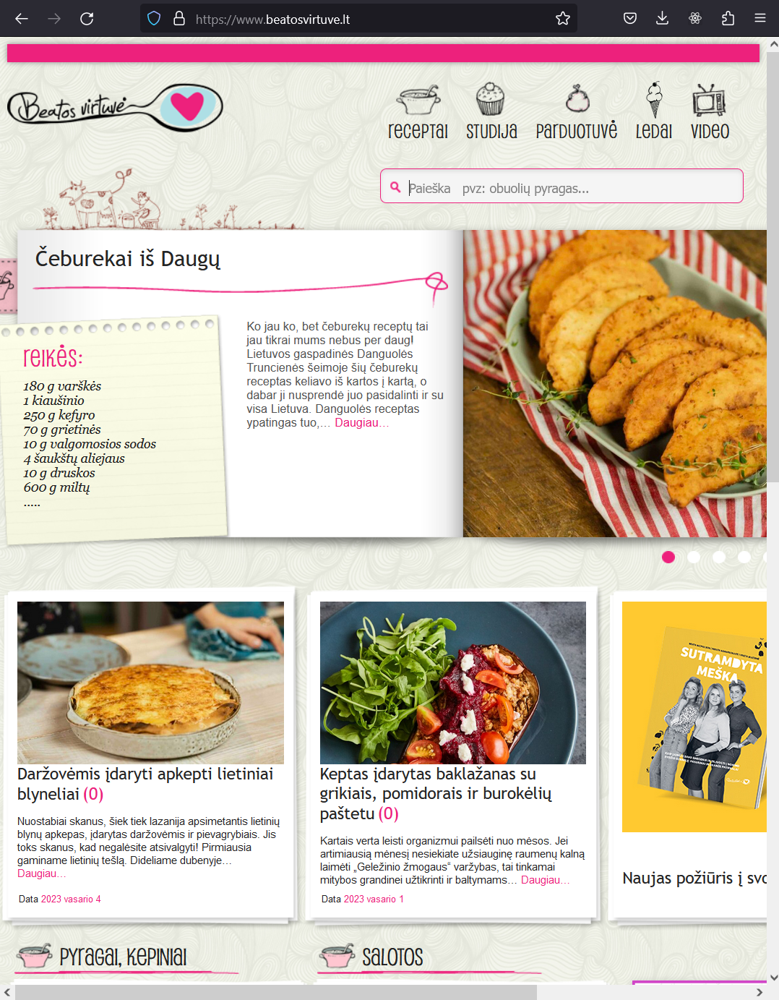
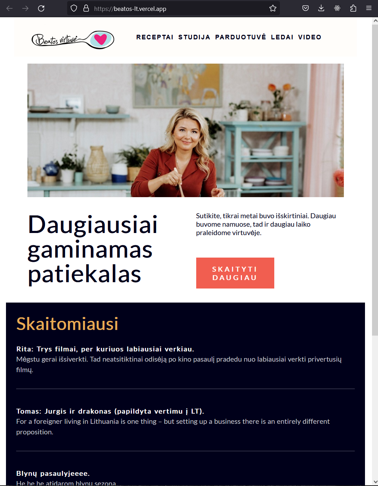

beatosvirtuve.lt
HTML5/CSS3/JS

HTML5/CSS3/JS
I chose to work on this project because I noticed that the beatosvirtuves.lt website lacked a good enough responsive design when viewed on a computer browser. I was inspired to create a better user experience for visitors to the site by improving its responsive design.
Read moreMy goal is to create a design that not only looks great, but is also easy to use and navigate, regardless of the device it is being viewed on. By working on this project, I aim to showcase my ability to identify and solve design problems, and to create visually appealing and user-friendly websites. I believe that this project will provide valuable experience and help me grow as a front-end developer. Additionally, by improving the beatosvirtuves.lt website, I hope to contribute to a positive online experience for its users."

